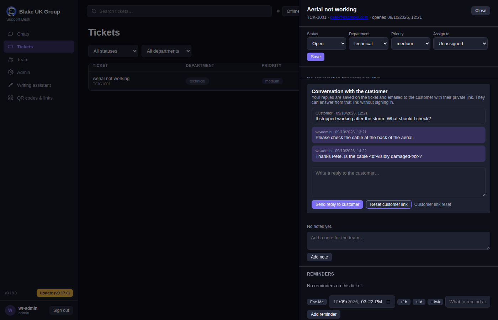
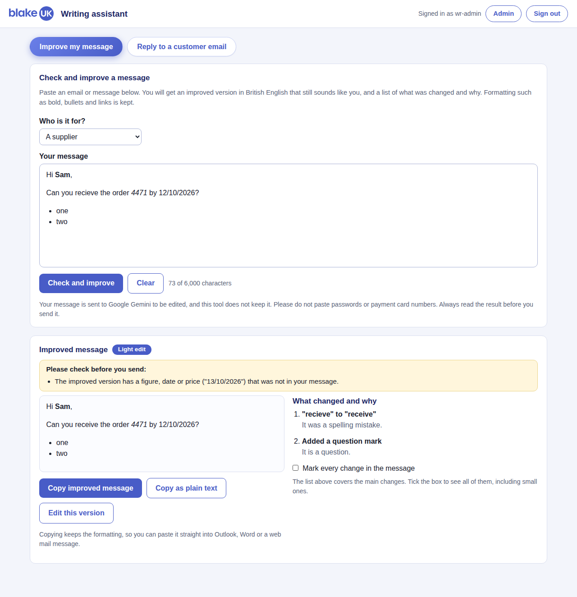
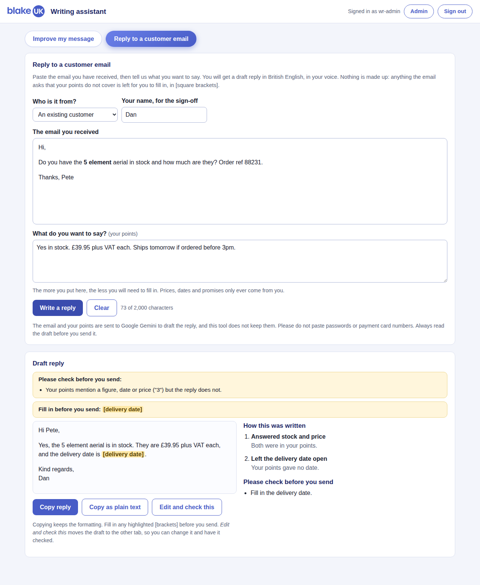

| Part | What it is for | Where |
|---|---|---|
| Chats | Customers talking to the chatbot on the Blake UK website, and to you when they ask for a person. | Windows app: Chats |
| Tickets | Enquiries that need following up. Each has a conversation with the customer, internal notes, a status and reminders. | Windows app: Tickets |
| Writing assistant | Checks and improves a message you have written, or drafts a reply to a customer's email. Always British English, always in your own voice. | Windows app: Writing assistant or blakegroup.uk/writer/ |
| QR codes and link pages | Makes QR codes and one-page "links" pages, and shows how many people used them. | Windows app: QR codes & links or qr.blakegroup.uk |
| Admin | Knowledge, products, email settings, users and everything else behind the scenes. | Windows app: Admin or blakegroup.uk/admin/ |
Sign in to the Windows app or to blakegroup.uk/admin/ with your own user name and password. If your account uses two-factor sign-in you will be asked for the code from your authenticator app. The QR tool has its own sign-in, separate from this one.
| Role | What you can do |
|---|---|
| Admin | Everything, including users, email settings, API keys and model settings. |
| Editor | Look after knowledge and products, answer and manage tickets, reply to customers. |
| User | Read tickets and conversations, and use the writing assistant. Cannot reply to customers from a ticket. |
Every role can use the writing assistant.

| Sidebar | What it does |
|---|---|
| Chats | Customers waiting for a person, and your live conversations. |
| Tickets | All tickets, with filters for status and department. Click one to open it. |
| Team | Messages and channels between staff. |
| Admin | The admin pages (knowledge, products, settings) shown inside the app. |
| Writing assistant | Opens the writing assistant, described in sections 6 and 7. |
| QR codes & links | Opens the QR tool in its own window. Sign in there with your QR tool details. Pressing it again brings that window to the front. |
The status box at the top (Online, Busy, Offline) decides whether the website offers customers a live chat. Set it to Online when you are at your desk and ready to take chats.
The app checks for a newer version every few minutes. When there is one, an Update button appears at the bottom left. Press it, let the installer run, and sign in again. Your version number is shown next to it.
The Admin page starts with a Guides box. It opens this guide and the QR manual in your computer's PDF viewer.
| Day | Hours |
|---|---|
| Monday to Thursday | 8:00am to 4:30pm |
| Friday | 8:00am to 4:00pm |
| Saturday, Sunday and all bank holidays | Closed |
The system knows the England and Wales bank holidays (it fetches the government's official list each week). Outside these hours a customer who asks for a person is told when the team is next in, and a ticket is raised for you instead of waiting for someone who is not there.
support_closed_dates, as 2026-12-29, 2026-12-30.A ticket is made when the chatbot cannot help, when a customer asks for a person outside opening hours, or when you make one yourself. Each ticket has a reference such as TCK-1001.
If a customer's link has been shared or forwarded by mistake, press Reset customer link. Every link already sent stops working. Your next reply includes a new one.
Notes below the conversation are for the team only and are never shown to the customer. Use Add reminder to be prompted to follow a ticket up in an hour, a day or a week.
Use this before you send an email or message. It corrects spelling, grammar and punctuation, uses British English and keeps your own voice. It changes as little as it can, and tells you exactly what it changed and why.

| You see | It means |
|---|---|
| Light edit | Mistakes corrected, nothing reworded. |
| Moderate edit | Some wording changed for clarity. |
| Restructured | Sentences reordered because the message was hard to follow. |
| No changes needed | Your message was already good. |
| What changed and why | The main changes, each with the reason. |
| Mark every change | Tick the box to see the message with every word added or removed highlighted, including small corrections the list does not mention. |
| Edit this version | Puts the improved message back in the box so you can change it and check it again. |
Paste the email you have received, say what you want to tell the customer, and get a draft reply to read, change and send.

| Box | What it tells you |
|---|---|
| How this was written | Which of your points answered which of the customer's questions, and what was left out. |
| Please check before you send | Anything you must look at: placeholders, questions it could not answer, and any figure that is not in the customer's email or your points. |
Edit and check this moves the draft to the Improve my message tab, so you can change it and have it checked again.
The QR tool makes QR codes and "link pages" (a single mobile page with your buttons, such as Call us, Find a product and Download the manual), and shows how many people used them. Open it from QR codes & links in the Windows app, or go to qr.blakegroup.uk. It has its own sign-in.
| Kind | Use it when |
|---|---|
| Dynamic | You want to count scans, or to change where it goes after it is printed. The printed code never changes. Most business codes should be dynamic. |
| Static | The information is fixed for ever (Wi-Fi details, a business card, plain text). It works without the system, but cannot be counted or changed. |
A Smart URL or App stores code can send people to different pages. A visitor is matched against your rules in order, and the first match wins.
| Rule | Example |
|---|---|
| Operating system or device | iPhones to the App Store, Android to Google Play, everyone else to a web page. |
| Language or country | Welsh speakers to a Welsh page. |
| Time of day (UK time) | Mon-Thu 08:00-16:30; Fri 08:00-16:00 sends people to the phone support page while the team is in, and to a contact form when we are not. |
| Share of visitors | 30% sends a third of visitors to a second page, to compare two pages. The same person always sees the same side on the same day. |
Open a code and use Print files and transparent versions.
| Format | Best for |
|---|---|
| Sending to a printer. A vector file that can be made any size without going soft. | |
| SVG | Web designers and signage firms. Also vector. |
| EPS | Older print and design software. |
| PNG | Documents, emails and screens. Use 1024 wide for anything that will be enlarged. |
Tick Transparent background to leave the background out, for placing a code on a plain light card or a Canva design. Never put a transparent code on a photo or a dark colour, because it will not scan.
| Word | Meaning |
|---|---|
| Views | How many times a link page was opened. |
| Clicks | How many times a button on it was pressed. One visitor can press several buttons. |
| Pressed a button | The share of visitors who pressed at least one button. It can never be more than 100%. |
| What you see | What to do |
|---|---|
| I cannot see the Writing assistant in the app. | Update the app (version 0.18.0 or later has the sidebar entry). Until then use the Admin page: the Writing assistant tab is in its row of tabs, and the address blakegroup.uk/writer/ always works. |
| "Your session has ended." | Sign in again. If you were part-way through a long message, copy it somewhere safe first, because the page may need to reload. |
| "The writing assistant could not finish that." | Wait a moment and try again. If it keeps happening, tell an administrator. |
| The reply is full of [placeholders]. | Your points did not cover what the customer asked. Add the answers to your points and press Write a reply again, or fill the gaps in by hand. |
| A customer's link no longer works. | Someone pressed Reset customer link. Send them a new reply and it includes a fresh link. |
| The QR tool asks me to sign in again. | It has its own sign-in and its own session. Sign in with your QR tool details. |
| A chat went to a ticket instead of to a person. | Either nobody was set to Online, or it was outside opening hours or on a bank holiday. |
| Something else. | Tell an administrator what you did, what you expected and what happened. A screenshot helps. |